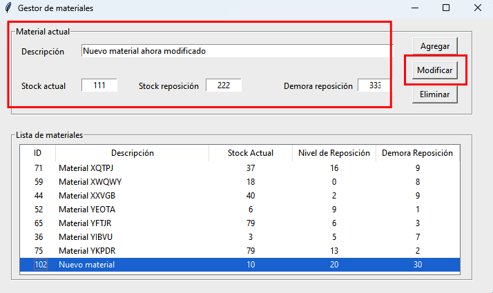

Modificación de un material¶
Realizando un doble click sobre un material mostrado en la sección Lista de materiales, los valores del material son cargados en la sección Material actual. A partir de aquí se puede modificar cualquiera de los valores y presionar el botón Modificar para registrar el cambio. Si la nueva descripción del material en edición coincide con la descripción de otro material entonces se muestra un mensaje de error y la modificación del material no se realiza, evitando así mantener materiales duplicados (misma descripción) en la base de datos.
Si no existe actualmente un material con la descripción indicada, el material es agregado a la base de datos, de otra forma se indica que el material ya existe (es duplicado) y no se agrega ningún registro.